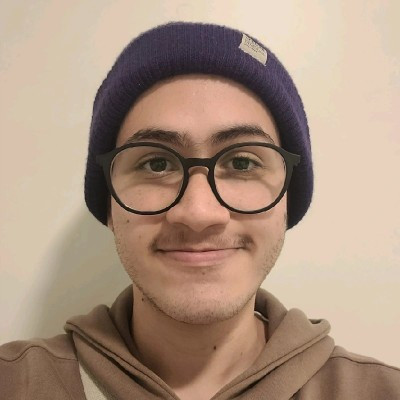
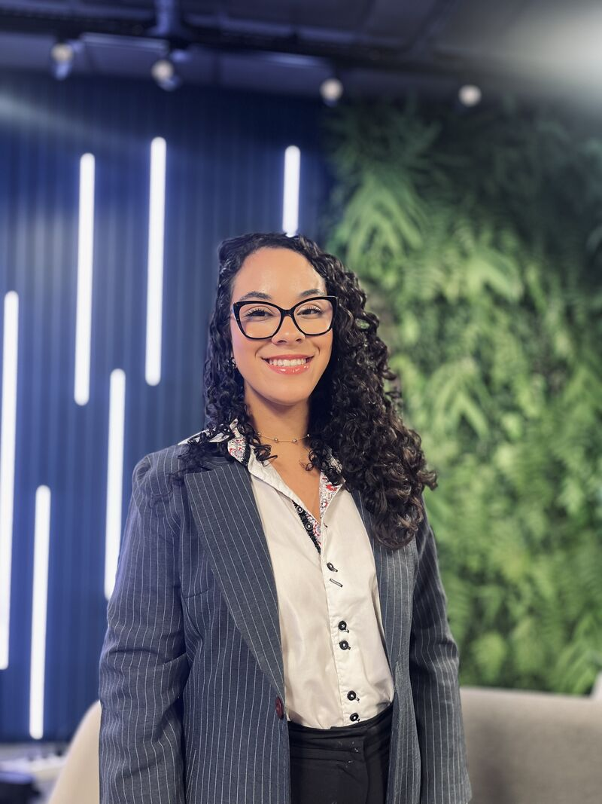
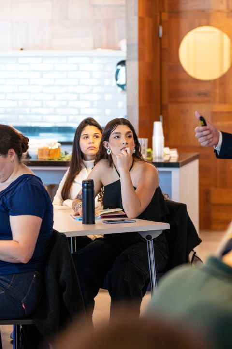

Uma experiência digital, sustentável e interativa para a logística reversa de alinhadores, integrando tecnologia e cuidado ambiental.
Conheça a EquipeTransformando o descarte dos alinhadores em uma experiência digital com foco em ESG.
Incentivar o descarte correto dos alinhadores, reduzindo resíduos plásticos e promovendo práticas mais sustentáveis através da logística reversa.
Integração total com o aplicativo existente, unindo desenvolvimento web moderno, validação segura e uma jornada do paciente fluida.
Sistema de pontos e recompensas que torna a experiência interativa, fortalecendo a marca SouSmile e o engajamento do paciente.
Conecte-se com a equipe responsável por desenvolver o EcoSmile.

Responsável pela prototipagem inicial no Figma e pelo desenvolvimento completo do backend voltado ao painel administrativo.

Responsável pela codificação do frontend das telas do aplicativo e pelo desenvolvimento estrutural do backend focado no cliente.

Responsável pelo redesign das interfaces com foco em UX, estruturação da lógica do aplicativo e alinhamento estratégico com a empresa parceira.